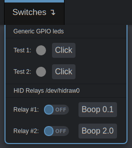

GPIO¶
GPIO (general-purpose input/output) is a series of digital interfaces that can be used to connect relays, LEDs, sensors, and other components.
Warning
- Before using GPIO on PiKVM v3 HAT, carefully study the purpose of its ports.
- Using GPIO on a PiKVM was designed as a feature for advanced users, so please familiarize yourself with the topic to make sure you understand how to use use it before setting it up.
- Careless usage of GPIO can damage your Raspberry Pi or components.
When talking about PiKVM and GPIO it refers not solely to the physical interface of the Raspberry Pi, but also to various plugins (for example, for USB relays) that can also be used transparently by emulating an abstract GPIO API.
Basics¶
Setting up GPIO is considerably complex. The interface is divided into several layers for flexibility. Any configuration is performed using a file /etc/kvmd/override.yaml which uses the YAML syntax. We will look at each part of the configuration individually with an example for each. Sections should be combined under shared keys.
-
Wrong:
kvmd: gpio: drivers: ... kvmd: gpio: scheme: ... -
Correct:
kvmd: gpio: drivers: ... scheme: ...
Drivers¶
The first part of the configuration refers to the hardware layer, which defines which IO channels are used (standard GPIO pins of the Raspberry Pi, an USB relay, and so on). If you just want to use GPIO with the default settings you can skip to the next section Scheme.
Each hardware input/output requires a individual driver configuration entry. Each driver has a type (which refers to the plugin that handles the communication between PiKVM and the hardware) and a unique name. This allows you to either can add multiple drivers of the same type with different settings or connect multiple USB HID relays.
Note
Each driver requires a unique name. Names surrounded by double underscore are system reserved and should not be used.
The only exception to this is the default GPIO driver with the name __gpio__, representing the physical GPIO interface of the Raspberry Pi. The configuration section for __gpio__ is only required in your /etc/kvmd/override.yaml if you want to change the default settings. It can be omitted if you are fine with the defaults.
kvmd:
gpio:
drivers:
# This example shows how the default __gpio__ driver settings can be changed. It can be omitted if you are fine with the defaults.
__gpio__: # Names surrounded by double underscore are system reserved
type: gpio # Refers to the plugin name handling the communication
# You can define another gpio driver for some reason
my_gpio:
type: gpio
# Example for a USB HID relay connected to PiKVM
relay:
type: hidrelay
device: /dev/hidraw0 # The path to the linux device
Scheme¶
The second part defines how the various driver channels are configured. Each channel has a unique name, a mode (input or output), a pin number, and a reference to the driver configured in the previous part.
Note
Names that starts and ends with two underscores (like __magic__) are reserved.
Two interaction modes are available for outputs: pulse and switch. In pulse mode, the output quickly switches its state to logical 1 and back (just like pressing a button). In switch mode, it saves (toggles) the state that the user set. When PiKVM is started/rebooted (any time the KVMD daemon is started or stopped) all output channels are reset to 0. This can be changed using the initial parameter. For example, initial=true for logic 1 on startup.
If you don't specify a driver for the channel in the scheme the default driver, __gpio__ will be used.
| Parameter | Type | Allowed values | Default | Description |
|---|---|---|---|---|
led1, button1, relay1, etc. |
string |
a-Z, numbers, _, - |
A section for the named channel | |
pin |
integer |
X >= 0 |
Refers to a GPIO pin or driver's pin/port | |
mode |
enum |
input or output |
Defines if a channel is used for input or output, may be limited by driver plugin | |
| Input only | ||||
debounce |
float |
x >= 0 |
0.1 |
Debounce time in seconds. 0 for disable debounce |
| Output only | ||||
switch |
bool |
true or false |
true |
Enables or disables the switch mode on the channel (enabled by default). |
initial |
nullable bool |
true, false or null |
false |
Defines the initial state of the switch upon boot, null for don't make changes (the last one does not supported by generic GPIO) |
inverted |
bool |
true or false |
false |
Inverts the active logical level |
pulse |
A section header to define switch pulse configuration | |||
delay |
float |
X >= 0 |
0.1 |
Defines the pulse time in seconds, 0 for disable pulsing |
min_delay |
float |
X >= 0.1 |
0.1 |
|
max_delay |
float |
X >= 0.1 |
0.1 |
kvmd:
gpio:
scheme:
# A certain device sends signals to the RPi and we want the PiKVM to display this as an led
led1:
pin: 19 # GPIO pin number on the RPi
mode: input
led2:
pin: 16
mode: input
# Two outputs of RPi's GPIO
button1:
pin: 26 # GPIO pin number on the RPi
mode: output
switch: false # Disable switching, only pulse available
button2:
pin: 20
mode: output
switch: false
relay1: # Channel 1 of the relay /dev/hidraw0
pin: 0 # Numerating starts from 0
mode: output # Relays can't be inputs
initial: null # Don't reset the state to 0 when initializing and terminating KVMD
relay2: # Channel 2
pin: 1
mode: output
initial: null
pulse:
delay: 2 # Default pulse value
max_delay: 2 # The pulse interval can be between min_delay=0.1 (by default) and max_delay=2
View¶
This is the last part of the required configuration. It defines how the previous driver and channel configuration is rendered on the Web interface. Here's an example for the example configuration above:
kvmd:
gpio:
view:
header:
title: Switches # The menu title
table: # The menu items are rendered in the form of a table of text labels and controls
- ["#Generic GPIO leds"] # Text starting with the sharp symbol will be a label
- [] # creates a horizontal separator and starts a new table
- ["#Test 1:", led1, button1] # Text label, one input, one button with text "Click"
- ["#Test 2:", led2, button2]
- []
- ["#HID Relays /dev/hidraw0"]
- []
- ["#Relay #1:", "relay1|Boop 0.1"] # Text label and button with alternative text
- ["#Relay #2:", "relay2|Boop 2.0"]
This will be rendered as:

Some rules and customization options:
- Text starting with the
#symbol will be a label. - To place a channel in a cell, use the name you defined in the scheme.
- Inputs are displayed as round LEDs.
- Outputs are displayed as a switch AND a button.
- If the switch mode is disabled, only a button will be displayed. If pulse is disabled, only a switch will be shown.
- To change the LED's color specify it after the channel name like
"led1|red". Available:green,yellowandred. - To change title of the button, write some its name like
"relay1|My cool relay". - Buttons and switches can request confirmation on acting. To do this write its name like
"relay1|confirm|My cool relay". The third argument with a title is required in this case.
Hardware modules and pseudo-drivers¶
Raspberry's GPIO¶
Click to view
The driver gpio provides access to regular GPIO pins with input and output modes. It uses /dev/gpiochip0 and the libgpiod library to communicate with the hardware. Does not support saving state between KVMD restarts (meaning initial=null).
You can use the interactive scheme when selecting the pins to use. Please note that when selecting a pin for a channel, you need to use a logical number instead of a physical number. That is, if you want to use a physical pin with the number 40, the channel must have the number 21 corresponding to the logical GPIO21.
Channels should not use duplicate pins. You can also not use already used pins. To see which pins are currently used, run the command gpioinfo.
USB HID Relay¶
Click to view
The driver hidrelay provides access to cheap managed USB HID relays that can be found on AliExpress. This driver does not support input mode, only output. To use it, you need to specify the path to the device file (like /dev/hidraw0) using the device parameter.
Additionally, we recommend to configure access rights and static device name using UDEV rules. For example, create /etc/udev/rules.d/99-kvmd-extra.rules:
KERNEL=="hidraw[0-9]*", SUBSYSTEMS=="usb", ATTRS{idVendor}=="16c0", ATTRS{idProduct}=="05df", GROUP="kvmd"
Channels should not use duplicate physical numbers. The driver supports saving state between KVMD restarts (meaning initial=null).
ezCoo KVM switch¶
Click to view
You can use GPIO to control KVM port switching. This usually requires the use of relays and buttons, but for the ezCoo switch there is a special ezcoo driver that simulates GPIO by sending commands to the switch via serial port. So you can make a menu in PiKVM to control the multiport switch.
IPMI¶
Click to view
The driver ipmi provides the ability to send IPMI commands (on, off, reset) and show the power status of the remote host. In fact, this is not a hardware driver, but something like a pseudo-GPIO. Each "pin" is actually responsible for a specific IPMI operation of ipmitool:
| Pin | Type | Command |
|---|---|---|
0 |
input |
ipmitool ... power status, can be used to draw the LED in the menu |
1 |
output |
ipmitool ... power on, sends the on command (and only this), so like all other outputs it should be a button |
2 |
output |
ipmitool ... power off |
3 |
output |
ipmitool ... power cycle |
4 |
output |
ipmitool ... power reset |
5 |
output |
ipmitool ... power diag |
6 |
output |
ipmitool ... power soft |
You are supposed to define one driver per host:
kvmd:
gpio:
drivers:
my_server:
type: ipmi
host: myserver.local
user: admin
passwd: admin
scheme:
my_server_status:
driver: my_server
pin: 0
mode: input
my_server_on:
driver: my_server
pin: 1
mode: output
switch: false
my_server_off:
driver: my_server
pin: 2
mode: output
switch: false
view:
table:
- [my_server_status, "my_server_on|On", "my_server_off|Off"]
Wake-on-LAN¶
Click to view
The driver wol provides a simple generator of Wake-on-LAN packages. One driver and one output are generated for one host if a simplified configuration method is used. However, you can define multiple drivers if you want to manage different hosts. One driver controls one host, and can only be used as an output. Pin numbers are ignored.
kvmd:
gpio:
drivers:
wol_server1:
type: wol
mac: ff:ff:ff:ff:ff:f1
wol_server2:
type: wol
mac: ff:ff:ff:ff:ff:f2
ip: 192.168.0.100
port: 9
scheme:
wol_server1:
driver: wol_server1
pin: 0
mode: output
switch: false
wol_server2:
driver: wol_server2
pin: 0
mode: output
switch: false
view:
table:
- ["#Server 1", "wol_server1|Send Wake-on-LAN"]
- ["#Server 2", "wol_server2|Send Wake-on-LAN"]
CMD¶
Click to view
The cmd driver allows you to run custom command on PiKVM OS.
Note
This driver does not support bash operators, that is, it is a direct call to commands with arguments. For more complex cases, write your own shell scripts.
Commands are executed from the user kvmd. If you want to run the command as root, then you need to configure sudo. Example of the /etc/sudoers.d/custom_commands:
kvmd ALL=(ALL) NOPASSWD: /usr/bin/reboot
Example of the /etc/kvmd/override.yaml:
kvmd:
gpio:
drivers:
reboot:
type: cmd
cmd: [/usr/bin/sudo, reboot]
scheme:
reboot_button:
driver: reboot
pin: 0
mode: output
switch: false
view:
table:
- ["reboot_button|confirm|Reboot PiKVM"]
PWM¶
Click to view
The pwm driver allows you to use some GPIO pins on the Raspberry Pi for PWM.
Here the small example with servo control:
-
Add to
/boot/config.txt:dtoverlay=pwm -
Create
/etc/udev/rules.d/99-kvmd-pwm.rules:SUBSYSTEM=="pwm*", ACTION=="add", RUN+="/bin/chgrp -R kvmd /sys%p", RUN+="/bin/chmod -R g=u /sys%p" SUBSYSTEM=="pwm*", ACTION=="change", ENV{TRIGGER}!="none", RUN+="/bin/chgrp -R kvmd /sys%p", RUN+="/bin/chmod -R g=u /sys%p" -
Connect Servo motor like SG90 PWM connection to RPi GPIO18, +5V and GND to a 5V and GND pin on header:
-
Add to /etc/kvmd/override.yaml
kvmd: gpio: drivers: servo1: type: pwm chip: 0 # PWM Chip Number period: 20000000 # Servo Motor SG90 Period in nano-seconds duty_cycle_push: 1500000 # Servo Motor SG90 duty_cycle for pushing button duty_cycle_release: 1000000 # Servo Motor SG90 duty_cycle for releasing button scheme: short_press: driver: servo1 pin: 0 # Pin number is the PWM channel number on the PWM Chip mode: output switch: false pulse: delay: 0.5 max_delay: 2 long_press: driver: servo1 pin: 0 mode: output switch: false pulse: delay: 2 max_delay: 2 extra_long_press: driver: servo1 pin: 0 mode: output switch: false pulse: delay: 10 max_delay: 20 view: header: title: Controls table: - ["#Servo - Short Press", "short_press|Press"] - ["#Servo - Long Press", "long_press|Press"] - ["#Servo - Extra Long Press", "extra_long_press|Press"]
Servo¶
Click to view
The servo module is built on top of the pwm module and allows user to define angles instead of duty_cyles to control a PWM enabled servo motor like SG90. When the button is pressed the servo motor moves to an angle defined by angle_push and when button is released it moves back to angle_release. In the example configuration for a cheap 5V SG90 Servo, the motor moves to an angle of 45 degrees when button is pressed and moves back to 20 degress when released.
To use Servo motors in PiKVM you need to follow steps 1-3 for PWM Module and then use the following configuration.
Add to /etc/kvmd/override.yaml:
kvmd:
gpio:
drivers:
servo1:
type: servo
chip: 0 # PWM Chip Number
period: 20000000 # Servo Motor SG90 Period in nano-seconds
duty_cycle_min: 350000 # Servo Motor SG90 duty_cycle for -90 degrees
duty_cycle_max: 2350000 # Servo Motor SG90 duty_cycle for +90 degrees
angle_max: 90 # Servo Motor SG90 angle at duty_cycle_max
angle_min: -90 # Servo Motor SG90 angle at duty_cycle_min
angle_push: 45 # Servo Motor SG90 angle to push button
angle_release: 20 # Servo Motor SG90 angle to release button
scheme:
short_press:
driver: servo1
pin: 0 # Pin number is the PWM channel number on the PWM Chip
mode: output
switch: false
pulse:
delay: 0.5
max_delay: 2
long_press:
driver: servo1
pin: 0
mode: output
switch: false
pulse:
delay: 2
max_delay: 2
extra_long_press:
driver: servo1
pin: 0
mode: output
switch: false
pulse:
delay: 10
max_delay: 20
view:
header:
title: Controls
table:
- ["#Servo - Short Press", "short_press|Press"]
- ["#Servo - Long Press", "long_press|Press"]
- ["#Servo - Extra Long Press", "extra_long_press|Press"]
Philips Hue¶
Click to view
The hue module can control smartplugs and lamps over Philips Hue Bridge API. In general the plugin can switch any device on/off which is connected to the bridge. To use it you will need API token aka username:
- Open
http://bridge/debug/clip.html. - In the URL: Field type
/api/. - In the Message Body: Field type:
{"devicetype": "pikvm"}. - Hit the Get Button.
- As the Response you become the Username:
{"success": {"username": "apiusername"}.
Example:
kvmd:
gpio:
drivers:
hue:
type: hue
url: http://bridge
token: YG-xxxxxxxxxxxx
scheme:
plug_button:
driver: hue
pin: 32
mode: output
initial: null
switch: true
pulse:
delay: 0
plug_led:
driver: hue
pin: 32
mode: input
view:
table:
- ["plug_led", "plug_button"]